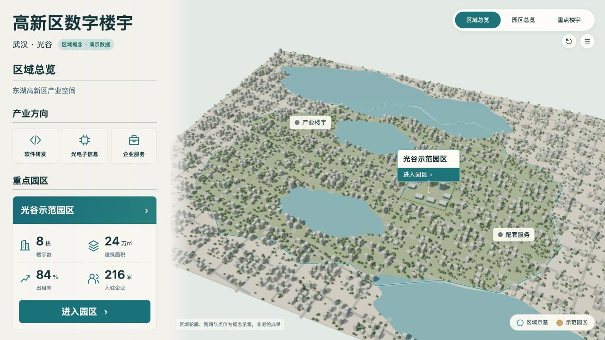
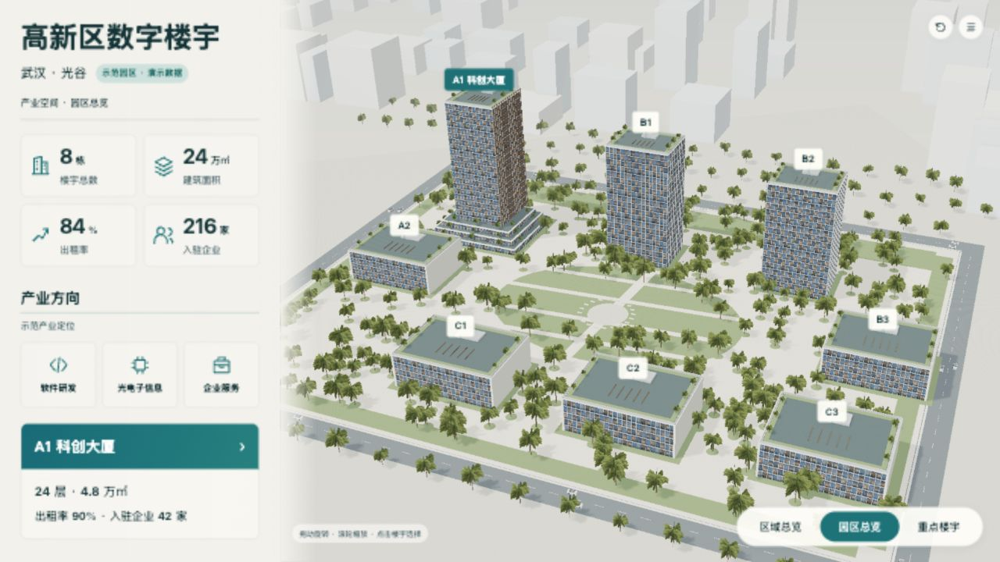
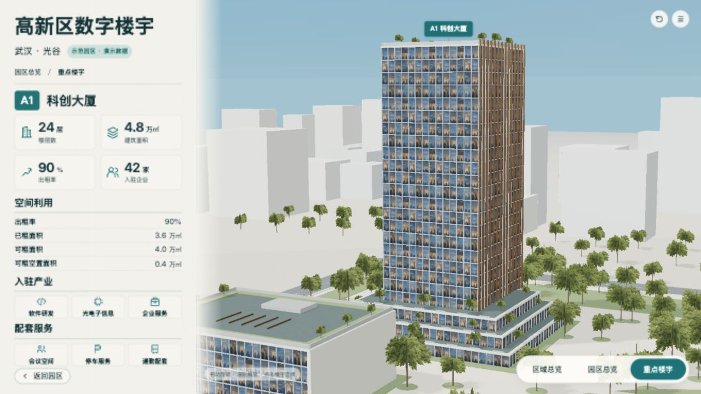

沿用三个已确认B层级图，不裁切或更改基准。演示快照、默认相机；区域轮廓和点位为概念示意。v13a为优化前首版，最终版与历史不足分开。
两图保留原始比例，AI图不具备测绘精度；对照不把AI不可数细节当作工程数据。浏览器截图是实际WebGL画面。





| ID | 预期 | 实际 | 原因假设 | 源修改 | 重建/复验证据 | 结果 | 后续 |
|---|---|---|---|---|---|---|---|
| CITY-01 | B-city-v1区域尺度，园区占小块，可逐层进入 | 独立区域LOD，同一8栋简化园区在区域中定位，地块/浮签/侧栏均可进入；原园区和A1详细GLB继续复用 | 原项目仅两层，需新增区域叙事 | planning/project.json production.city、build_city.py、CityView.js和三层统一level/mode | city-gray-gate-v3.md；city-runtime-v13.json；三层最终截图 | 范围与导航实现；不是实际武汉地理模型 | 真实边界必须另用可核查数据，不从概念轮廓推导 |
| CITY-02 | 区域边界完整入镜，标签/指标不挤压 | 边界宽85.5%、高55.85%；3标签可见；1920×1080园区卡片底部正常32.20px、无数据31.20px | 简化首版过挤，水面层高差不足 | 相机距离、卡片纵向间距和地表深度间隔 | city-gray-v1/v2/v3.jpg；city-gray-target-v3.json；city-runtime-verification-v13.json | 主要构图和深度闪烁已修复 | 新版本继续同条件复验 |
| CITY-03 | 暖白城市体块、低饱和景观、水系与青绿轮廓 | 实时模型具备道路、水面、建筑群、树林和园区金色地块；建筑/水面细节比AI简化，路网更规整，缺少AI自然岸线岛屿与反射层次 | 程序化示意资产和实时渲染细节规模 | 平面道路合批、树冠共享顶点；不以图片代替三维 | city-detailed-v13a.jpg → city-detailed-v13-final.jpg；city-assets-contract-v13a/v13b/v13.json | 112822三角形，3.79MB满足8MB预算，19次绘制调用；保留视觉差异，不宣称照片级/像素级匹配 | 后续如追求更高还原度，继续细化道路布局、岸线与景观，不改确认图 |
| CITY-04 | 三层相同数据模式、正确数据归属及运动生命周期 | 园区指标只取既有campus快照；缺失跨层保持，入口可用；隐藏园区车辆暂停，返回继续；12轮资源稳定 | 独立LOD不能产生第二套经营数据与对象状态 | 单一level/mode驱动两渲染组件，场景只初次进入时加载；隐藏不绘制、不累积dt | three-level-cycles-v13.json；city-runtime-verification-v13.json | 当前执行环境实测通过，目标设备和长时未覆盖 | 部署后在目标展厅硬件测试 |
[
{
"level": "city",
"baseline": "design/concepts/city/B-city-v1.png",
"baselineSha256": "795eafd78c54589532038304611a5fffeb3d02dd2311c7b381dc0064ae838170",
"actual": "checks/city-detailed-v13-final.jpg",
"actualSha256": "56d71d35f87bc6778d103c5b5324537fc8e81c3d48c904d631131b3a434225bb"
},
{
"level": "campus",
"baseline": "design/concepts/B-campus-v2.png",
"baselineSha256": "b7256276a9357e0255ac1799e189de000f3c69563e0672624b826acfb76db264",
"actual": "checks/campus-detailed-v13-final.jpg",
"actualSha256": "723e4500521db357396d49445aa9123f9ebcc87b08f8caa6268babeadfd29efa"
},
{
"level": "building",
"baseline": "design/concepts/B-building-v2r1.png",
"baselineSha256": "1aa5b6d94d1b17ae9b7eb815fa59fa75c1f0f44f88a9f2e41045d85aae8f43e4",
"actual": "checks/building-detailed-v13-final.jpg",
"actualSha256": "436cfcd1cb6dab034ec8855adeb03bab8dd76092d87e503ff2aa609292618337"
}
]